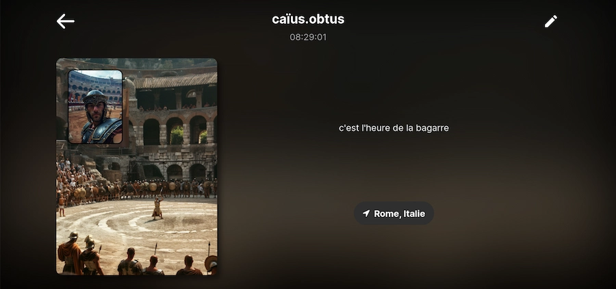
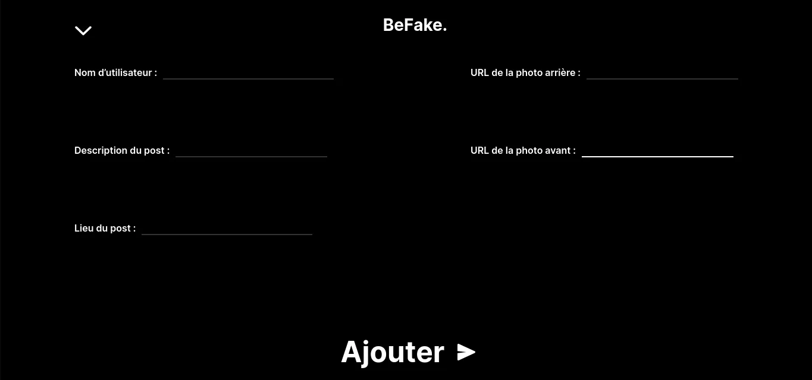

Refonte de site d’un musée
Le site s’adapte à toute taille d’écran et à été pensé pour être accessible.
Ce projet d'une semaine m'a fait découvrir le framework backend Ruby on Rails. Nous étions à deux et la contrainte était de créer un site utilisant des images générées par l'intelligence artificielle Midjourney. Découvrez-en plus ↓
Et si vous souhaitez le voir en ligne ↗
À deux, avec Tom Wainberg avons décidé de parodier le réseau social BeReal qui se veut être une "dose quotidienne de vie réelle", avec l'utilisation de l'intelligence artificielle pour mettre en scène de fausses images improbables.
L'application n'existant que sur mobile, nous avons donc repris des éléments du design comme la typographie et plus globalement le style pour créer une version responsive et pour ordinateur également. Nous avons utilisé en grande partie Bootstrap pour le design.

À travers Ruby on Rails, en plus de la gestion de base de données en ligne, j'ai aussi été initié à la programmation orientée objet et nous avons dû réfléchir à notre application en conséquence. Notre objet premier était un post, pour lequel étaient définis une photo avant, une photo arrière, une description, une localisation, un auteur et une date récupérée automatiquement. Finalement, nous avons eu à utiliser de l'hébergement Platform as a Service (PaaS) avec Scalingo.
Ce projet fait suite à un autre pour lequel nous avons eu à créer, en partant de presque zéro, un blog avec des articles, des commentaires, des likes, des cookies, des sessions et avec la possibilité de s'inscrire et de se connecter, tout en php : Le blog de la Strix ↗
Pour voir l'application en ligne ↗